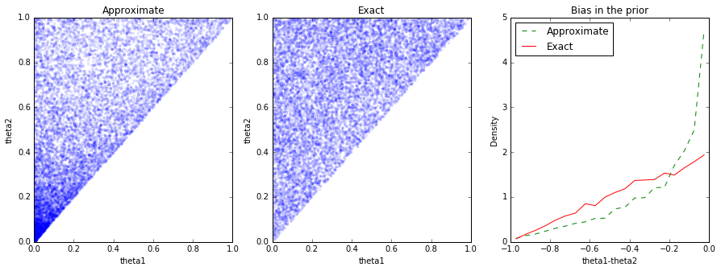
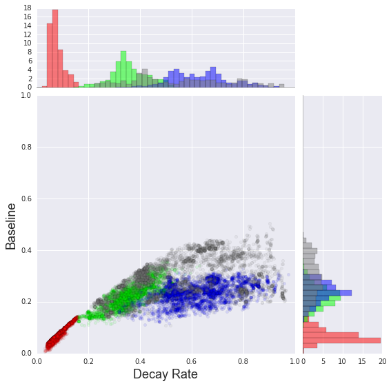
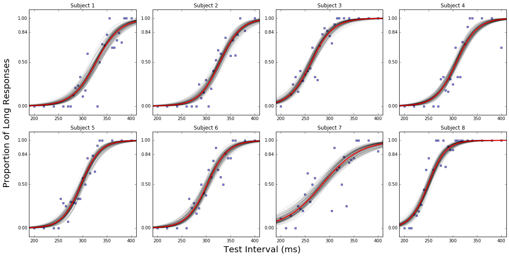
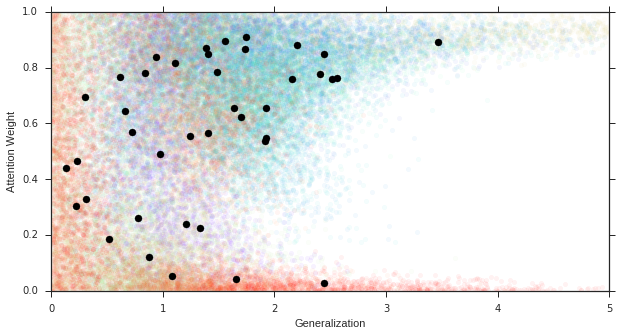
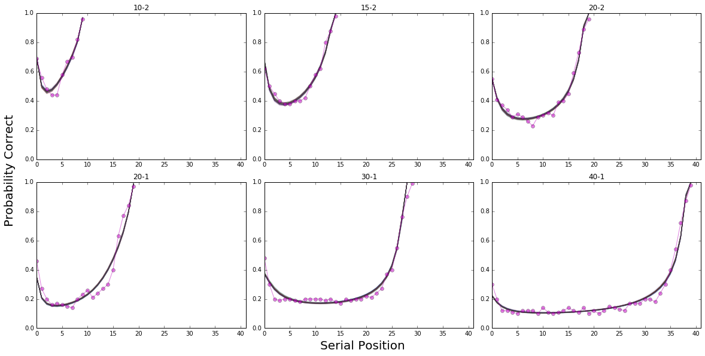

2016-03-15

For the past two months, I have been porting the models in Lee and Wagenmakers’ Bayesian Cognitive Modeling - A Practical Course into pymc3 as a way to learn Bayesian Statistics and python. I also replicated most of the figures as in the book. I am glad that now I am finished (except the model in Chapter 19, more on that later). The full project is in Jupiter notebook format, and you can download it on Github.
Needless to say, I am excited to hear your feedback. If you have any suggestion to optimize the models and the code, please send me a PR.
As someone used Matlab heavily, Jupiter notebook and python amazed me greatly. The figure outputs are fresh looking and easy to code. Speaking of easy to code, one thing I can never quite understand is that why there is still no alpha feature for scatter plot in Matlab - the workaround by creating the patch is incredibly slow if the underly dataset is large.
In python, it is not difficult to generate paper ready figures such as below (codes could be found in the Notebooks):




As for the problem I am still having in the model of Chapter 19, I reported an issue here. This might be a pymc3 issue - hopefully it will be resolved soon.